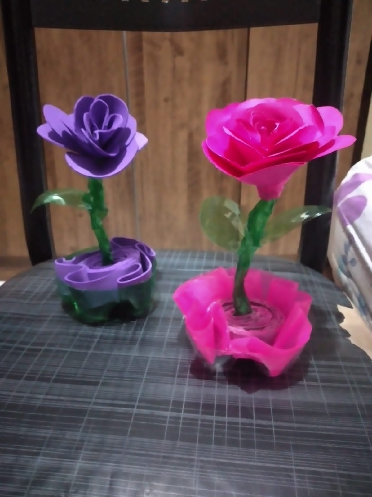
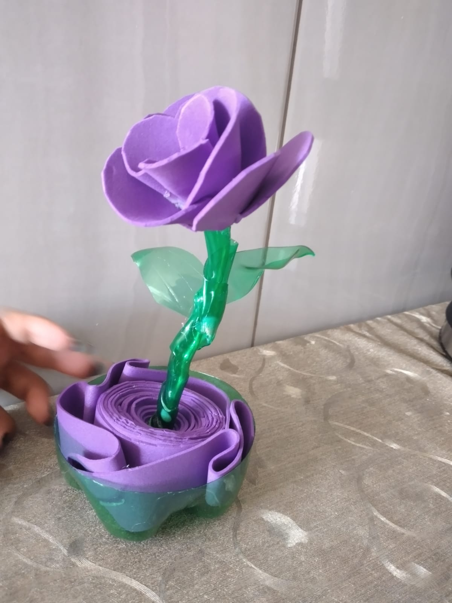
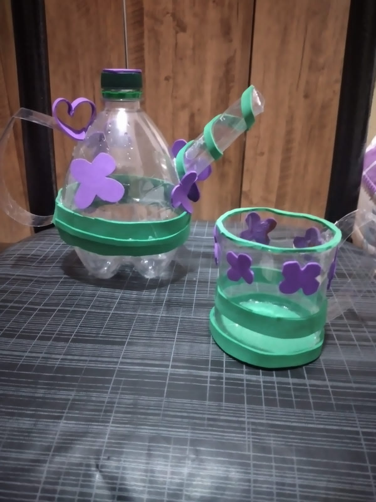
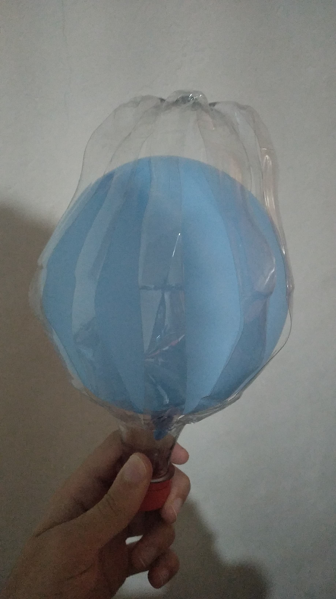
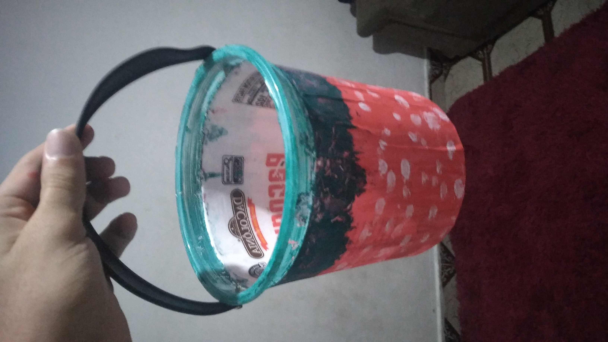
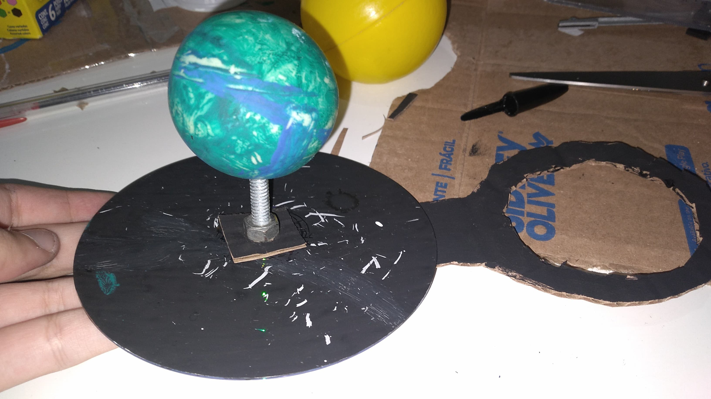
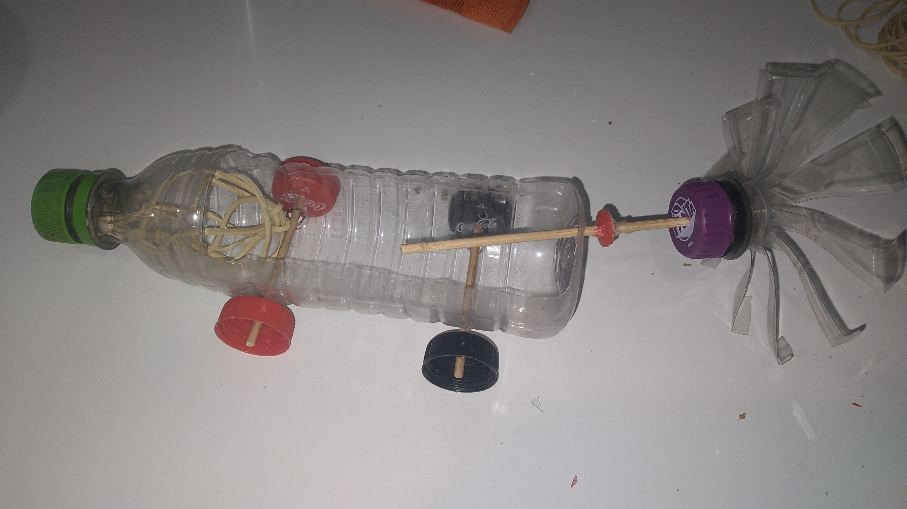
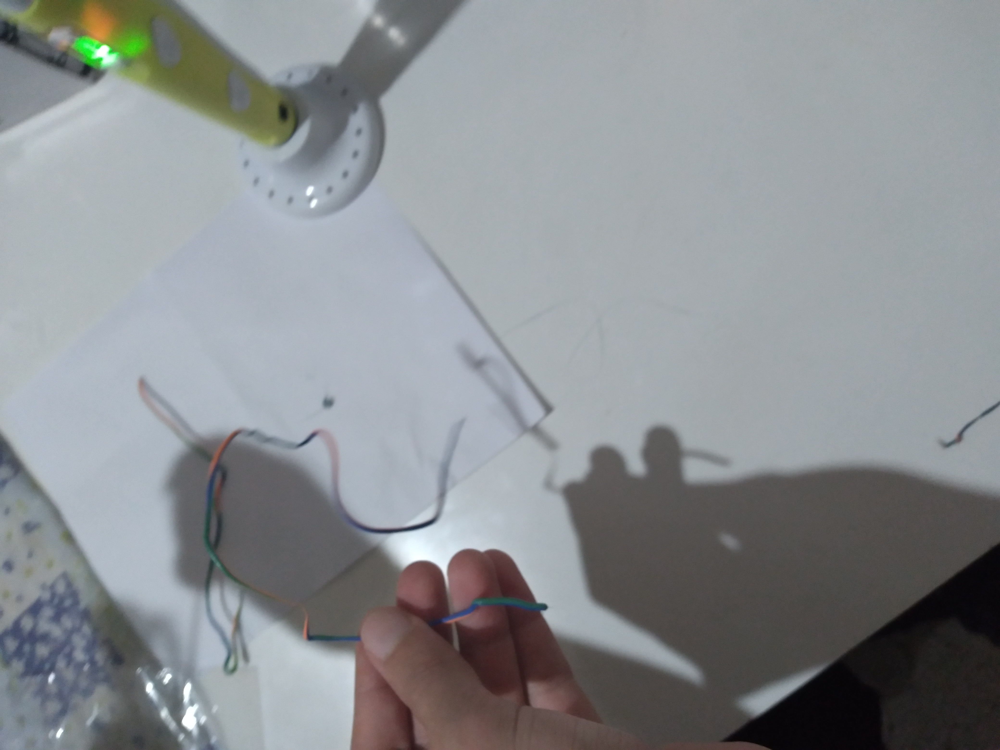
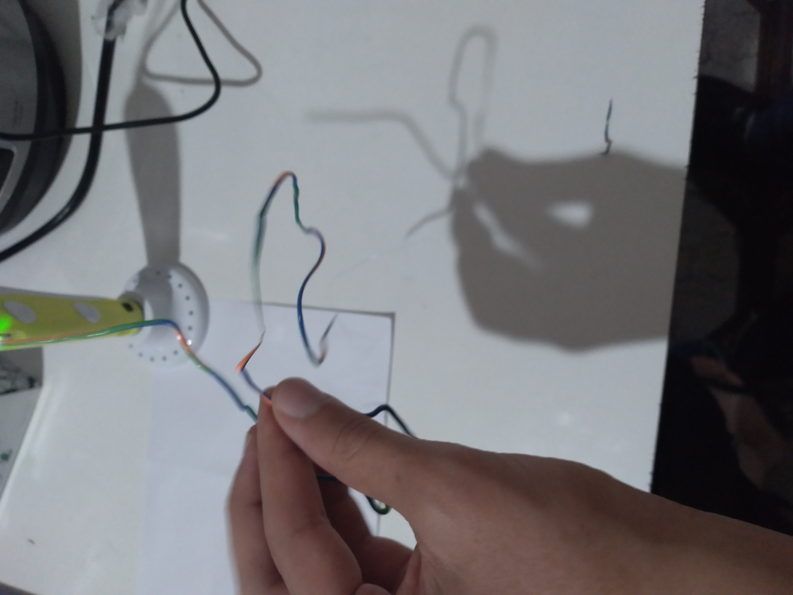

Nossos Produtos
Artesanato sustentável feito à mão com plástico reciclado.
Na PlásTec, cada produto começa como uma garrafa descartada. Utilizando técnicas de corte, modelagem a calor, pintura e montagem artesanal — além da caneta 3D para detalhes — transformamos plástico comum em peças funcionais e decorativas. Confira abaixo o que já produzimos:
🌸 Decoração

Flores Decorativas
Rosas coloridas esculpidas a partir de garrafas PET, com caule e vaso integrado. Disponíveis em rosa e roxo.

Flores Decorativas (Variação)
Variação de cores e tamanhos das flores artesanais de PET, ideais para decoração de mesa.

Jogo de Chá
Bule e xícara confeccionados com garrafas PET, decorados com fita verde e apliques de EVA roxo.

Balão de Festa
Garrafa PET transparente envolvendo um balão colorido, criando uma decoração festiva reutilizável.

Balde Artesanal
Balde produzido a partir de galão de plástico, pintado e decorado com papel estampado e alça reutilizada.
.jpeg "Vaso de Planta")
Vaso de Planta
Garrafa PET cortada e remodelada para servir como vaso, ideal para pequenas mudas e plantas.
🔬 Educativo e Técnico

Planetário
Maquete do sistema solar com Terra e Sol representados por bolas pintadas sobre base de papelão, com suporte articulado.

Carrinho de Propulsão
Carrinho funcional feito com garrafa PET e tampinhas como rodas, com turbina de propulsão artesanal.
🖊️ Ferramentas e Insumos

Caneta 3D
Caneta 3D utilizada pela equipe para criar detalhes e estruturas nas peças artesanais, usando filamento PLA colorido.

Caneta 3D em Uso
A caneta 3D permite desenhar e construir no ar com plástico derretido, sendo uma ferramenta central no processo criativo da PlásTec.
Identidade PlásTec
A PlásTec possui identidade visual própria, desenvolvida pela equipe, que representa a caneta 3D, o cubo de impressão e o espírito criativo do projeto.
📸 Todos os produtos na Feira

Foto tirada durante a Feira de Projetos da Etec de Carapicuíba (dezembro de 2024), exibindo todos os produtos artesanais confeccionados pela equipe.